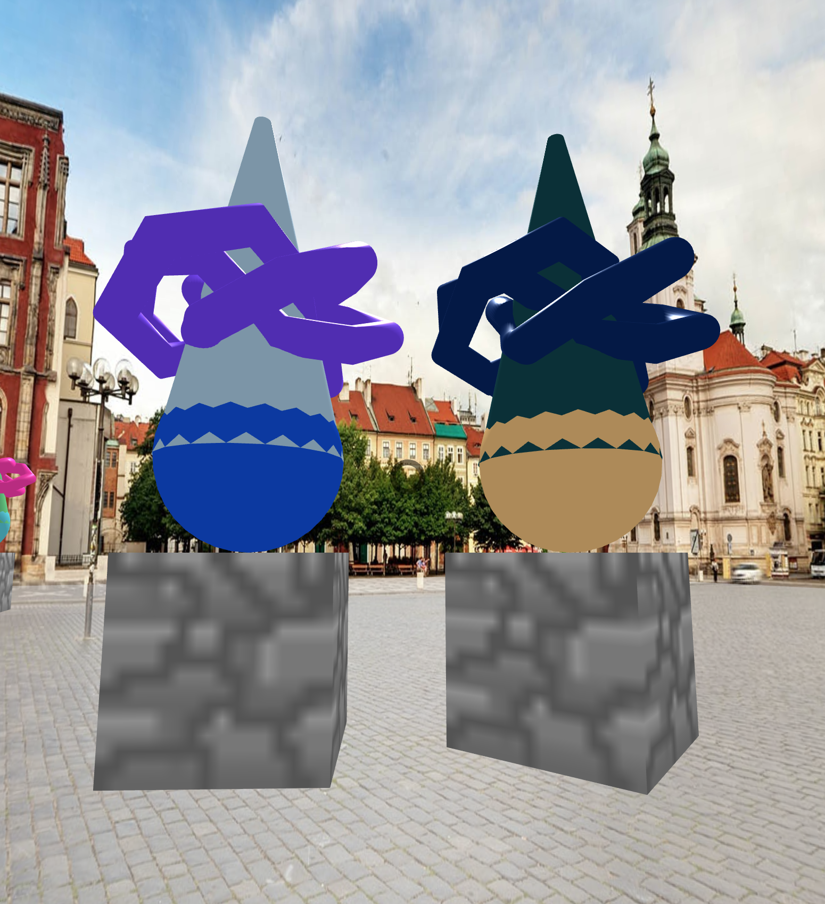

For this project, I just kind of experimented with the basics of what A-Frame can do within the basic parameters of the assignment. I started by making the first version of my "sculpture" which is just a basic stack of objects. I ended up with something that looks kind of look a funny person, with a box, sphere, cone, and torus knot on top. I really liked the look of the intersecting shapes at the top! I've included a photo of a few of those "sculptures" below. I ended up going for a kind of randomized "art gallery" look, with many replications of these sculptures slowly and randomly rotating around the player. The player can also "click" on either any cone or ball to make it disappear.
